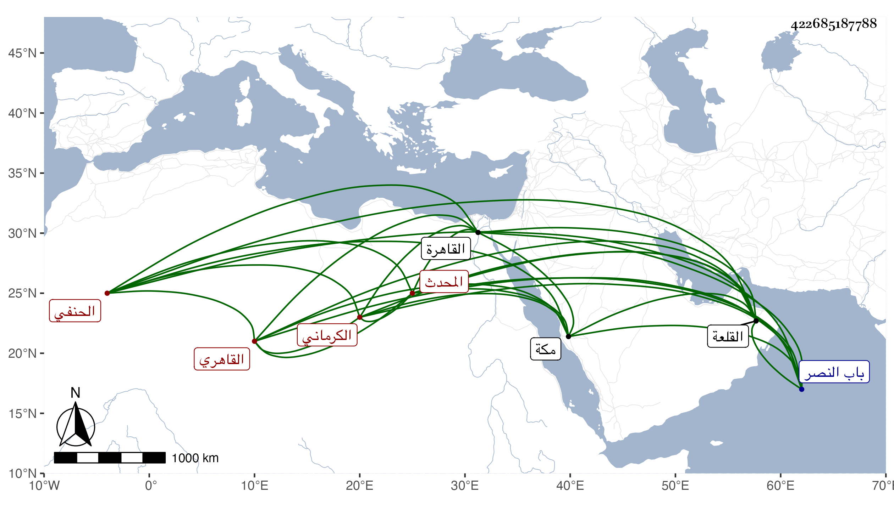

0902Sakhawi.DawLamic.ITO20230111-ara1.EIS1600.422685187788
Biography ID: 422685187788
أحمد بن عثمان بن محمد بن إبراهيم بن عبد الله الشهاب أبو الفتح الكرماني الأصل القاهري الحنفي المحدث ويعرف بالكلوتاتي . ولد في أواخر ذي الحجة كما قرأته بخطه وهو المعتمد أو في رمضان كما قاله شيخنا في أنبائه سنة اثنتين وستين وسبعمائة ، وأجاز له العز ابن جماعة فهرست مروياته والصلاح بن أبي عمر وابن أميلة وخلق وحبب إليه الطلب بعناية صديقه الشمس بن الرفا ودار على الشيوخ وسمع على ناصر الدين الحراوي والعفيف النشاوي والتقي بن حاتم وجويرية ابنة الهكاري وغيرهم من أصحاب ابن الصواف وابن القيم ثم من أصحاب وزيرة والحجار والواني والدبوسي والختني ثم من أصحاب النجيب ثم من أصحاب الفخر ثم من بعدهم حتى قرأ على أقرانه ومن سمع بعده وكان ابتداء قراءته سنة تسع وسبعين وهلم جرا ما فتر ولا وني وتكررت قراءته للكتب الكبار حتى أنه قرأ البخاري أكثر من ستين مرة وشيوخه فيه نحو من ذلك إلى غيره من الكتب الكبار والمعاجم والمشيخات والمسانيد والأجزاء مما لا ينحصر . وأخذ علوم الحديث عن العراقي وولده وشيخنا ومما قرأه عليه الاقتراح لابن دقيق العيد وعلوم الحديث للتركماني بل لابن الصلاح والإلمام وغير ذلك من تصانيفه كتعليق التعليق بكماله وقطعة من أطراف المسند ومروياته وأجازه غير واحد منهم شيخنا بالإقراء . بل كان شيخنا ممن استفاد منه المسموع والشيوخ ووصفه في إجازة له بالأخ في الله تعالى الشيخ الإمام العالم الفاضل الكامل الأوحد المحدث مفيد الطالبين عمدة المحدثين جمال الكملة القدوة المحقق ، زاد في أخرى البارع صدر المدرسين جمال الحفاظ المعتبرين بقية السلف المتقين خادم سنة سيد المرسلين ، وكذا أخذ الفقه عن العز الرازي والشمس ابن أخي الجار والبدر بن خاص بك وأكمل الدين والجلال التباني وغيرهم والقراآت عن جماعة وأكثر من الاشتغال بالعربية على الغماري والشهاب الصنهاجي وعبد الحميد الطرابلسي والسراج وطائفة ولم يمهر فيها حتى كان بعض الشيوخ إذا سمع قراءته يقول له احرم سلم وكذا لم يمهر في غيرها حتى قال شيخنا أنه لم ينتقل عن الحد الذي ابتدأ فيه في الفهم والمعرفة والحفظ والقراءة درجة مع شدة حرصه على الاشتغال في الحديث والفقه والعربية والقراءة وتحصيله الكثير من الكتب بحيث كتب بخطه جملة من تصانيف الشيوخ ثم من تصانيف الأقران كالولي العراقي ثم شيخنا وآخرين وخطه رديء وفهمه بطيء ولحنه فاش لكنه كان دينا خيرا كثير العبادة على وجهه وضاءة الحديث وكان في أكثر عمره متقللا من الدنيا حتى كان يحتاج إلى التكسب بالشهادة ثم قرر في قراءة الحديث بالقصر الأسفل من القلعة بأخرة بعد السراج قارئ الهداية فقرأ صحيح مسلم عدة سنوات فلما كانت سنة أربع وثلاثين كان متوعكا فقرر عوضه شيخنا الشمس الرشيدي لكونه كان مصاهرا له ولذا استقر فيها عوضه ، بل كان باسمه قبل ذلك إسماع الحديث بتربة الظاهر برقوق خارج باب النصر استقر فيها في سنة سبع عشرة ، قال شيخنا وقد صاهر الزين العراقي على ابنته جويرية فأولدها أولادا ماتوا وتزوج ابنة له منها النجم الفاسي فأولدها ولدين ومات عنهما فنشأ في كفالته إلى أن فارق جدتهما فسافرت بهما مع ابنته إلى مكة فماتا هناك قال وقد أشرت عليه أن يجمع شيوخه إرادة أن يتيقظ ويتخرج كما تمهر غيره فما أظنه فعل . قلت قد رأيته اختصر الناسخ والمنسوخ للحازمي وعمل مختصرا في علوم الحديث قال أنه من كلام العلماء وتخريجا لنفسه لم يكمله ومختصر تهذيب الكمال شرع فيه وله ثبت في مجلدين فيه أوهام كثيرة التقط شيخنا منها اليسير وبينه في جزء سماه سكوت ثبت كلوت ، وأسمع في أواخر عمره من لفظه لكونه عرض لسمعه ثقل ، سمع منه خلق من الأعيان كالمناوي وابن حسان وتغري برمش الفقيه وابن قمر وفي الإحياء منهم جماعة ، ولم يرزق حظا ولا نباهة ، ومات في يوم الاثنين رابع عشري جمادى الأولى سنة خمس وثلاثين بالقاهرة ودفن جوار الزين العراقي ولم يخلف بعده في معناه مثله رحمه الله ونفعنا به ، ورأيت من نقل عن تغري برمس الفقيه أنه قال لم ندرك فيمن أدركنا أكثر سماعا منه قيل له ولا ابن حجر قال نعم ولا أشياخه . وهذا مجازفة فكم من كتاب وجزء ومشيخة ومعجم قرأه شيخنا أو سمعه لعل الكلوتاتي ما رآه . وقد ترجمه المقريزي في عقوده باختصار وأنه لم يخلف بعده في قراءة الحديث مثله .
